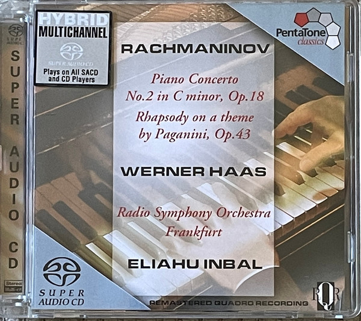

SACD
Rachmaninov Piano Concerto No. 2 In C Minor, Op. 18 - Rapsody On A Theme By Paganini, Op. 43
Sergei Vasilyevich Rachmaninoff, Werner Haas
Media: — · Sleeve: —
—
Personal
Discogs SuggestedCA$32.34
Discogs MedianCA$32.34
Discogs HighCA$32.34
- Physical Copy ID
- BB-SACD-188
- Year
- 2003
- Label
- PentaTone classics
- Catalog #
- PTC 5186 114
- Country
- NLNetherlands
- Genre / Style
- Classical · Modern